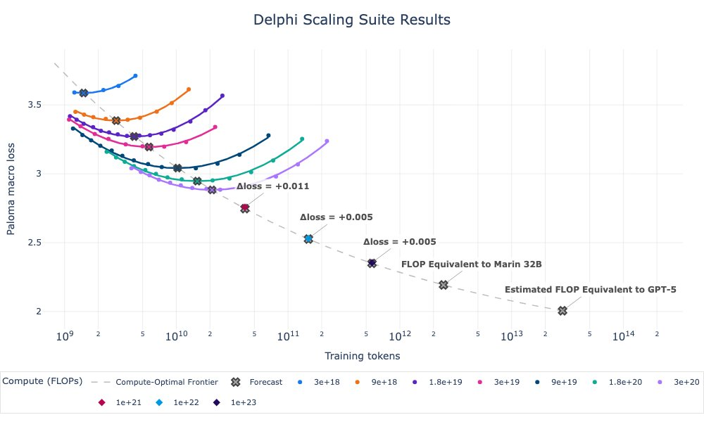
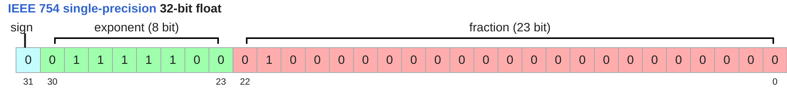
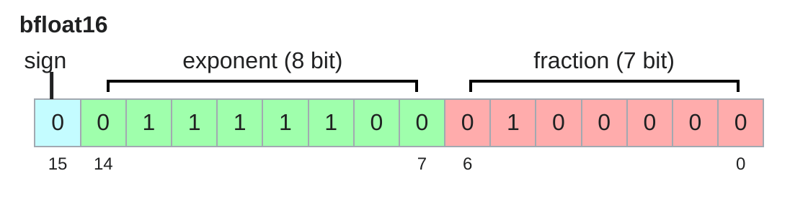
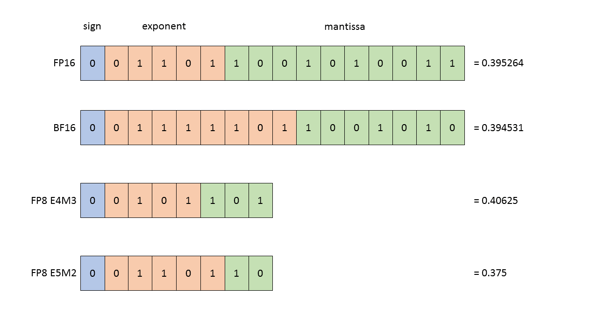
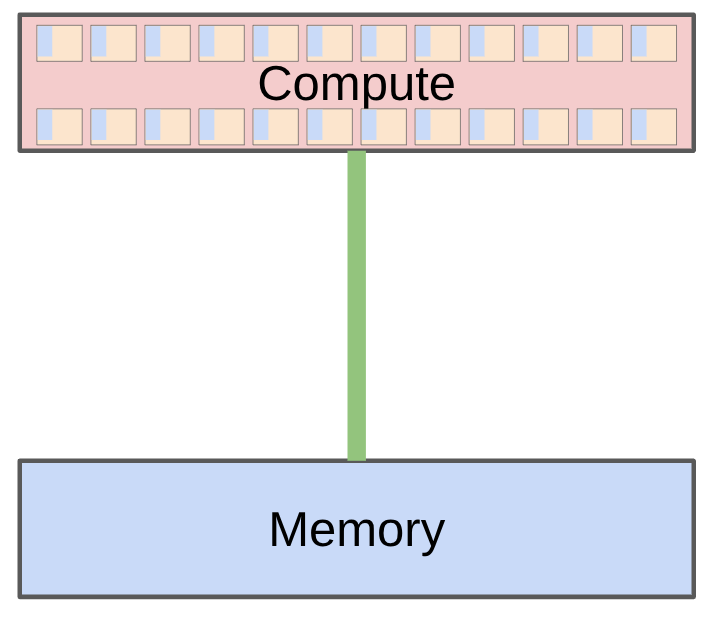
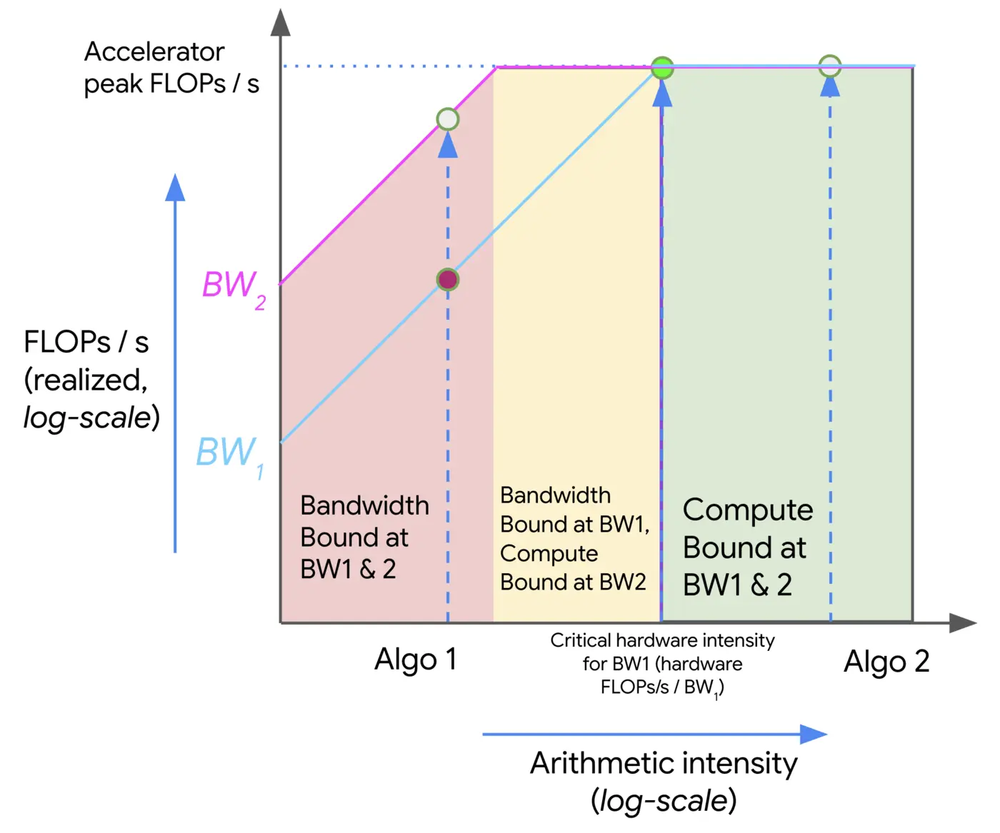
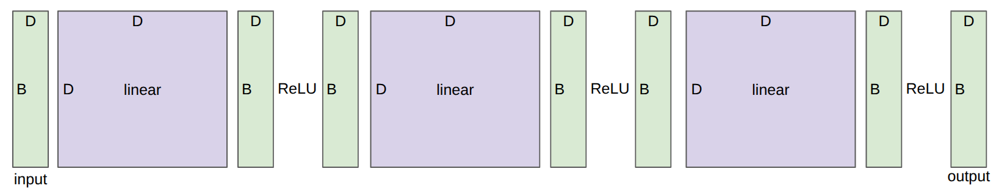

Language Modeling from Scratch · Lecture 02
Resource Accounting
Memory and compute accounting for training: tensors and floating-point formats (fp32 → fp4), einops, FLOPs and MFU, arithmetic intensity and rooflines, the 6ND rule, optimizer state, gradient accumulation and activation checkpointing.
- 2026-09-19
- resource accounting, precision, einops, FLOPs, roofline
- Source ↗
In one minute
- Goal: the best model given fixed resources — so first learn to account for memory and compute of any computation.
- Memory = (# values) × (bytes per value). Formats trade range vs. resolution: fp32 → fp16 / bf16 → fp8 → fp4; mixed precision keeps optimizer state in fp32.
- A training step costs about \(6 \times\) (# data points) \(\times\) (# parameters) FLOPs: 2 forward, 4 backward.
- Arithmetic intensity (FLOPs per byte) vs. accelerator intensity decides memory-bound vs. compute-bound: matmuls are compute-bound, elementwise ops are memory-bound.
- Gradient accumulation and activation checkpointing trade time/compute for memory, to afford bigger batches.
Announcements
- Join the CS336 slack
- Sign up on Modal with your Stanford email
- Read the AI policy guide
- Read the cluster guide
Marin 1e23 FLOPs run finished and matched forecasts!

Last lecture: overview, tokenization. Today: resource accounting (systems).
Recall: what's the best model one can train given fixed resources (compute, memory)? In other words: maximize (computational) efficiency. Prerequisite: understand the resources (compute, memory) for a given computation.
Motivating questions
How long would it take to train a 70B parameter model on 15T tokens on 1024 H100s?
total_flops = 6 * 70e9 * 15e12 # 6.3e24
h100_flop_per_sec = 1979e12 / 2
mfu = 0.5
flops_per_day = h100_flop_per_sec * mfu * 1024 * 60 * 60 * 24 # 4.38e22
days = total_flops / flops_per_day # ≈ 144 days
What's the largest model that can you can train on 8 H100s using AdamW?
h100_bytes = 80e9
bytes_per_parameter = 2 + 2 + (4 + 4) # parameters (2), gradients (2), optimizer state (4 + 4) → 12
num_parameters = (h100_bytes * 8) / bytes_per_parameter # ≈ 5.3e10 (53B)
Caveat: activations are not accounted for (depends on batch size and sequence length), so this is an upper bound.
This is a rough back-of-the-envelope calculation. But it gives you the flavor of napkin math one can quickly do to get a sense of resources.
What knowledge to take away from this lecture
- Mechanics: straightforward (PyTorch semantics)
- Mindset: resource accounting (remember to do it)
- Intuitions: get a sense of how resources are spent, no ML magic today
Memory accounting
Tensors basics
Tensors are the basic building block for storing everything: data, parameters, gradients, optimizer state, activations.
Example: parameters of the DeepSeek v3.2 model [DeepSeek-AI+ 2025] — see the DeepSeek v3.2 model on Hugging Face.
Each tensor has a rank, which is the number of dimensions.
x = torch.zeros(4) # rank 1 tensor (vector)
x = torch.zeros(4, 8) # rank 2 tensor (matrix)
x = torch.zeros(4, 8, 2) # rank 3 tensor
In Transformers, will see tensors of rank 4:
B = 32 # Batch size
S = 16 # Sequence length
H = 16 # Number of heads
D = 64 # Hidden dimension per head
x = torch.zeros(B, S, H, D)
Tensors memory
Elements of tensors are generally floating point numbers.
fp32

The fp32 data type (also known as float32 or single precision) is the default. Traditionally, in scientific computing, fp32 is the baseline; you could use double precision (fp64) in some cases. In deep learning, you can be a lot sloppier.
My notes the principle of float
- float data use scientific domain to express the numbers
- sign is the LAST digit
Same fraction bits 0100000000, just moving the exponent:
| exponent | value | in binary |
|---|---|---|
| -1 | 0.625 | 0.101 |
| 0 | 1.25 | 1.01 |
| 1 | 2.5 | 10.1 |
| 2 | 5.0 | 101 |
| 10 | 1280 | 10100000000 |
Identical digits, point relocated: fraction = which digits, exponent = what scale.
The sign bit. Signs the number, not the exponent. The exponent's own sign is handled by the bias, so the two are independent — 0.625 has a negative exponent (small) but a clear sign bit (positive).
The exponent bias. The exponent field is stored unsigned, and the real exponent is stored - bias:
bias = 2^(k-1) - 1 k = number of exponent bits
| format | exp bits | bias | bias in binary |
|---|---|---|---|
| float16 | 5 | 15 | 01111 |
| float32 | 8 | 127 | 01111111 |
| float64 | 11 | 1023 | 01111111111 |
| bfloat16 | 8 | 127 | 01111111 |
The bias is always 0 followed by all 1s — one below the halfway point.
For float16 the 5 bits give 0-31, but both endpoints are reserved:
00000 (0) -> zero / subnormals
00001-11110 -> normal, actual exponent = stored - 15 -> -14 ... +15
11111 (31) -> inf / NaN
Let's examine memory usage of these tensors. Memory is determined by the (i) number of values and (ii) data type of each value.
x = torch.zeros(4, 8)
assert x.dtype == torch.float32 # Default type
assert x.numel() == 4 * 8
assert x.element_size() == 4 # Float is 4 bytes
assert get_memory_usage(x) == 4 * 8 * 4 # 128 bytes
def get_memory_usage(x: torch.Tensor):
return x.numel() * x.element_size()
One matrix in the feedforward layer of GPT-3:
assert get_memory_usage(torch.empty(12288 * 4, 12288)) == 2304 * 1024 * 1024 # 2.3 GB
fp16

The fp16 data type (also known as float16 or half precision) cuts down the memory.
x = torch.zeros(4, 8, dtype=torch.float16)
assert x.element_size() == 2
However, the dynamic range (especially for small numbers) isn't great.
x = torch.tensor([1e-8], dtype=torch.float16) # tensor([0.], dtype=torch.float16)
assert x == 0 # Underflow!
Underflow
If this happens when you train, you can get instability.
bf16

Google Brain developed brain floating point (bf16) in 2018 to address this issue. bf16 uses the same memory as fp16 but has the same dynamic range as fp32! The only catch is that the resolution is worse, but this matters less for deep learning.
x = torch.tensor([1e-8], dtype=torch.bfloat16) # tensor([1.0012e-08], dtype=torch.bfloat16)
assert x != 0 # No underflow!
Mixed precision
Implications on training:
- Training with fp32 works, but requires lots of memory.
- Training with fp16 and even bf16 is risky, and you can get instability.
Solution: mixed precision training [Micikevicius+ 2017]
- Use bf16 for parameters, activations, and gradients
- Use fp32 for optimizer states
PyTorch has an automatic mixed precision (AMP) library [docs]. Tries to cast things into bf16 when safe (matmuls, not exp).
with torch.amp.autocast("cuda", dtype=torch.bfloat16):
x = torch.zeros(4, 8) # still float32: autocast casts ops (e.g. matmuls), not tensor creation
fp8
In 2022, fp8 was standardized, motivated by machine learning workloads [primer].

H100s support two variants of FP8: E4M3 (range \([-448, 448]\)) and E5M2 (\([-57344, 57344]\)). Reference: [Micikevicius+ 2022]
fp4
In 2025, NVIDIA developed nvfp4. Only 4 bits per value!
Values: \(-6, -4, -3, -2, -1.5, -1.0, -0.5, 0.0, 0.5, 1.0, 1.5, 2, 3, 4, 6\)
Use a separate scale factor per block, so actually get more dynamic range (but just can't vary freely from neighbors).
Nemotron 3 Super was trained in NVFP4 [NVIDIA 2026].
Some of this is done in NVIDIA libraries outside of user control.
Tensors on GPUs
By default, tensors are stored in CPU memory.
x = torch.zeros(32, 32)
assert x.device == torch.device("cpu")
However, what about GPUs?

In order to take advantage of the massive parallelism of GPUs, we need to move them to GPU memory.
device = cuda_if_available() # cuda:0
x = x.to(device)
Or create the tensor directly on the GPU:
with torch.device(device):
x = torch.zeros(32, 32)
assert x.device == device
Compute accounting
Tensor einops
My notes einsum, from Einstein's convention
Einstein's 1916 notation: in \(\sum_k A_{ik} B_{kj}\) the \(\sum\) carries no information — the repeated index \(k\) already tells you what is being summed. So drop it and just write \(A_{ik} B_{kj}\). einsum is that idea as an API: name the axes, and the notation does the bookkeeping.
Two rules, that's the whole thing:
- give every axis a letter (or a name)
- any axis missing from the output gets summed over
"ik,kj->ij"
^ ^ k: on the left, absent from the output -> summed away
^ ^ ^^ i, j: appear in the output -> kept
So you describe the shape of the result, and einsum works out the loops.
torch.einsum("ij->ji", A) # transpose
torch.einsum("ij->i", A) # sum each row (j vanishes)
torch.einsum("ij->", A) # sum everything
torch.einsum("i,i->", a, b) # dot product
torch.einsum("i,j->ij", a, b) # outer product (nothing summed)
torch.einsum("ik,kj->ij", A, B) # matmul
torch.einsum("bik,bkj->bij", A, B) # batched matmul
That last one shows the distinction: b is in the output so it is carried along; k is not, so it is reduced.
Mentally it is just nested loops with the missing index as the accumulator:
# "ik,kj->ij"
for i:
for j:
out[i,j] = sum over k of A[i,k] * B[k,j]
Same two rules below, only with the axes spelled out — "batch seq1 hidden, ..." instead of "bsh, ...". Worth it because the line documents itself and shape bugs surface as a readable error instead of a silent wrong broadcast.
Traditional PyTorch code:
x = torch.ones(2, 2, 3) # batch seq hidden
y = torch.ones(2, 2, 3) # batch seq hidden
# y.transpose higher than @ in priority
z = x @ y.transpose(-2, -1) # batch seq seq
Easy to mess up the dimensions (what is -2, -1?)…
Einops is a library for manipulating tensors where dimensions are named. It is inspired by Einstein summation notation (Einstein, 1916). [Einops tutorial]
einsum
Einsum is generalized matrix multiplication with good bookkeeping.
x = torch.ones(3, 4) # seq1 hidden
y = torch.ones(4, 3) # hidden seq2
# Old way
z = x @ y # seq1 seq2
# New (einops) way
z = einsum(x, y, "seq1 hidden, hidden seq2 -> seq1 seq2") # shape (3, 3), all 4s
Let's try a more complex example…
x = torch.ones(2, 3, 4) # batch seq1 hidden
y = torch.ones(2, 3, 4) # batch seq2 hidden
# Old way
z = x @ y.transpose(-2, -1) # batch seq1 seq2
# New (einops) way
z = einsum(x, y, "batch seq1 hidden, batch seq2 hidden -> batch seq1 seq2") # shape (2, 3, 3)
# Or can use `...` to represent broadcasting over any number of dimensions
z = einsum(x, y, "... seq1 hidden, ... seq2 hidden -> ... seq1 seq2")
Rule
Dimensions that are not named in the output are summed over.
reduce
You can reduce a single tensor via some operation (e.g., sum, mean, max, min).
x = torch.ones(2, 3, 4) # batch seq hidden
# Old way
y = x.sum(dim=-1) # shape (2, 3), all 4s
# New (einops) way
y = reduce(x, "... hidden -> ...", "sum")
rearrange
Sometimes, a dimension represents two dimensions… and you want to operate on one of them.
x = torch.ones(3, 8) # seq total_hidden
# ...where `total_hidden` is a flattened representation of `heads * hidden1`
w = torch.ones(4, 4) # hidden1 hidden2
# Break up `total_hidden` into two dimensions (`heads` and `hidden1`)
x = rearrange(x, "... (heads hidden1) -> ... heads hidden1", heads=2) # (3, 2, 4)
# Perform the transformation by `w`
x = einsum(x, w, "... hidden1, hidden1 hidden2 -> ... hidden2") # (3, 2, 4)
# Combine `heads` and `hidden2` back together
x = rearrange(x, "... heads hidden2 -> ... (heads hidden2)") # (3, 8)
Tensor operations FLOPs
Having gone through all the operations, let us examine their computational cost.
A floating-point operation (FLOP) is a basic operation like addition (\(x + y\)) or multiplication (\(x y\)).
Two terribly confusing acronyms (pronounced the same!)
- FLOPs: floating-point operations (measure of computation done)
- FLOP/s: floating-point operations per second (also written as FLOPS), which is used to measure the speed of hardware.
Intuitions
- Training GPT-3 (2020) took 3.14e23 FLOPs. [article]
- Training GPT-4 (2023) is speculated to take 2e25 FLOPs. [article]
- H100 has a peak performance of 1979 teraFLOP/s with sparsity, 50% without. [spec]
8 H100s for 2 weeks:
h100_flop_per_sec = 1979e12 * 50%
total_flops = 8 * 2 * (60 * 60 * 24 * 7) * h100_flop_per_sec # 9.58e21
Linear model
B = 16384 # Number of points
D = 32768 # Dimension of each point
K = 8192 # Number of outputs
x = torch.ones(B, D, device=cuda_if_available())
w = torch.randn(D, K, device=cuda_if_available())
y = x @ w
How many FLOPs is this matmul? We have one multiplication (x[i][j] * w[j][k]) and one addition per \((i, j, k)\) triple.
$$ \text{FLOPs} = 2 \cdot B \cdot D \cdot K $$
actual_num_flops = 2 * B * D * K # 8.80e12
We can also time this operation to see how long it takes.
actual_time = benchmark(lambda: x @ w) # 0.165 s (on an H100)
actual_flop_per_sec = actual_num_flops / actual_time # 5.34e13 FLOP/s
def benchmark(func, num_trials: int = 5) -> float:
"""Return the number of seconds required to perform `func`."""
# Wait until previous CUDA threads are done
if torch.cuda.is_available():
torch.cuda.synchronize()
def run():
# Perform the operation
func()
# Wait until CUDA threads are done
if torch.cuda.is_available():
torch.cuda.synchronize()
# Time the operation `num_trials` times
total_time = timeit.timeit(run, number=num_trials)
return total_time / num_trials
Each GPU has a specification sheet that provides the peak performance. Example: H100 spec. Note that the FLOP/s depends heavily on the data type!
| GPU | fp32 (FLOP/s) | bf16 / fp16 dense (FLOP/s) |
|---|---|---|
| A100 | 19.5e12 | 312e12 |
| H100 | 67.5e12 | 1979e12 / 2 |
| B200 | 75e12 | 4.5e15 / 2 |
My notes why bf16 is ~15× fp32, not 2×
Half the bits should buy 2×. The table says otherwise:
| GPU | fp32 | bf16 dense | ratio |
|---|---|---|---|
| A100 | 19.5e12 | 312e12 | 16× |
| H100 | 67.5e12 | 989e12 | 14.7× |
| B200 | 75e12 | 2.25e15 | 30× |
The catch: these two columns are not two speeds of the same hardware. fp32 runs on CUDA cores, bf16 runs on tensor cores. Two independent factors stack.
1. Tensor cores are a different machine. A CUDA core does one fused multiply-add per lane per clock (2 FLOPs). A tensor core executes a whole small matrix multiply as one instruction — an m16n8k16 MMA is 16·8·16 = 2048 MACs = 4096 FLOPs.
What makes that possible is operand reuse. In a matmul every loaded element is used many times. A SIMT implementation re-fetches operands from the register file for each MAC, so you hit register-file bandwidth long before you run out of multipliers — the ALUs sit idle waiting to be fed. A tensor core hardwires the dataflow: load a tile once, push it through a grid of multipliers that share operands spatially. Same silicon, far better operand delivery. Note this factor has nothing to do with precision — TF32 still carries 19 significand bits and still gets ~7×.
2. Multiplier area is quadratic in mantissa width. An FP multiplier's cost is dominated by the mantissa multiply array, roughly \(O(n^2)\) in area. The exponent needs only a small adder — \(O(n)\), negligible.
| format | significand bits (incl. implicit) | multiplier area vs fp32 |
|---|---|---|
| fp32 | 24 | 1× |
| fp16 | 11 | ~1/5 |
| bf16 | 8 | ~1/9 |
| fp8 E4M3 | 4 | ~1/36 |
bf16's mantissa is 3× narrower than fp32's, so its multiplier is about 9× smaller — 9× as many fit in the same area. The format is 2× narrower in bits, but silicon is spent on the mantissa, and that enters squared.
Why bf16 is the economically correct cut
Exponent bits are cheap (an adder, linear). Mantissa bits are expensive (an array, quadratic). bf16 spends nothing where it is cheap — keeping all 8 exponent bits, so range matches fp32 and nothing underflows — and cuts hard where it is expensive. It isn't a compromise between fp32 and fp16; it is the right place to cut.
Same logic explains why the tensor core accumulates in fp32: accumulation is an adder, linear and cheap. Pay quadratically only for the multiply, so make the multiply narrow and keep the sum wide.
Reading spec sheets — two traps, both inflating the apparent ratio:
- marketing usually quotes sparse FLOP/s (2:4 structured sparsity), doubling the number again — hence the
/ 2in the table above - the "fp32" figure is the non-tensor CUDA-core number while everything else is tensor core; part of the gap is that mismatch, not precision
And the ratio is a ceiling, not a default. It needs shapes that tile cleanly (dims multiple of 8/16), the right memory layout, enough arithmetic intensity to stay compute-bound, and library paths that actually emit MMA instructions. A bf16 elementwise op gets none of it — it is memory-bound and sees maybe 2× from the halved bytes. Which is exactly what MFU below measures: peak FLOP/s is the denominator, and the gap is the interesting number.
promised_flop_per_sec = get_promised_flop_per_sec(x.dtype) # 6.75e13 (H100, float32)
Model FLOPs utilization (MFU)
Definition MFU
$$ \text{MFU} = \frac{\text{actual FLOP/s}}{\text{promised FLOP/s}} $$
(ignore communication/overhead)
mfu = actual_flop_per_sec / promised_flop_per_sec # 0.79
Usually, MFU of ≥ 0.5 is quite good!
But why is MFU not closer to 1? To answer this question, we need to look more closely at how computations are done on GPUs…
Arithmetic intensity

How to compute a thing:
- Send inputs from memory to accelerator
- Perform computation
- Send outputs from accelerator to memory
How long does this take? Depends on two things:
- Accelerator speed (FLOP/s) — H100:
1979e12 / 2(half without sparsity) - Memory bandwidth (bytes/s) — H100:
3.35e12
ReLU
n = 1024 * 1024
x = torch.ones(n, dtype=torch.bfloat16, device=cuda_if_available())
y = torch.relu(x)
bytes = (2 * n) + (2 * n) # Read x, write y (bf16 is 2 bytes/float)
flops = n # n comparisons
communication_time = bytes / h100_bytes_per_sec # 1.25e-06 s
computation_time = flops / h100_flop_per_sec # 1.06e-09 s
Assume we can overlap communication and computation perfectly.
total_time = max(communication_time, computation_time) # 1.25e-06 s
What is the bottleneck?
- Memory-bound: communication time > computation time
- Compute-bound: computation time > communication time
In this case, ReLU is memory-bound.
Alternative way to see this:
Definition Accelerator intensity vs. arithmetic intensity
Accelerator intensity: how much work can the accelerator do per byte transferred?
$$ \text{accelerator intensity} = \frac{\text{FLOP/s}}{\text{bytes/s}} \approx 295 \text{ for H100 (bf16)} $$
Arithmetic intensity: how much actual work per byte for this workload?
$$ \text{arithmetic intensity} = \frac{\text{FLOPs}}{\text{bytes}} $$
h100_accelerator_intensity = h100_flop_per_sec / h100_bytes_per_sec # 295.37
arithmetic_intensity = flops / bytes # 0.25
What is the bottleneck?
- Memory-bound: arithmetic intensity < accelerator intensity
- Compute-bound: arithmetic intensity > accelerator intensity
In general, we'll find ourselves memory bound. Can we increase arithmetic intensity?
GeLU
y = F.gelu(x) # GELU(x) = 0.5 x (1 + tanh(sqrt(2/pi) (x + 0.044715 x^3)))
bytes = (2 * n) + (2 * n) # Read x, write y (bf16 is 2 bytes/float)
flops = 20 * n # tanh can be approximated in various ways (e.g., polynomials)
arithmetic_intensity = flops / bytes # 5.0 < 295
Note that GeLU does more work than ReLU per byte moved, so it has higher arithmetic intensity. But still memory-bound! In other words, ReLU is not faster than GeLU (when doing things in an isolated way).
Dot product
n = 1024 * 1024
x = torch.ones(n, dtype=torch.bfloat16, device=cuda_if_available())
w = torch.ones(n, dtype=torch.bfloat16, device=cuda_if_available())
y = x @ w
bytes = (2 * n) + (2 * n) + 2 # Read x, read w, write y
flops = 2 * n - 1 # n multiplications, n-1 additions
arithmetic_intensity = flops / bytes # ~1/2 < 295
Memory-bound!
Matrix-vector product
n = 1024
x = torch.ones(n, dtype=torch.bfloat16, device=cuda_if_available())
w = torch.ones(n, n, dtype=torch.bfloat16, device=cuda_if_available())
y = x @ w
bytes = (2 * n) + (2 * n * n) + (2 * n) # Read x, read w, write y
flops = n * (2 * n - 1) # n dot-products
arithmetic_intensity = flops / bytes # ~1 < 295
Memory-bound!
Matrix-matrix product
n = 1024
x = torch.ones(n, n, dtype=torch.bfloat16, device=cuda_if_available())
w = torch.ones(n, n, dtype=torch.bfloat16, device=cuda_if_available())
y = x @ w
bytes = (2 * n * n) + (2 * n * n) + (2 * n * n) # Read x, read w, write y
flops = n * n * (2 * n - 1) # n^2 dot products
arithmetic_intensity = flops / bytes # ~n/3 = 341 > 295
Finally, compute-bound!
| Operation (bf16, H100) | Arithmetic intensity | Bound |
|---|---|---|
| ReLU | 0.25 | memory |
| GeLU | 5 | memory |
| Dot product | ~1/2 | memory |
| Matrix-vector (\(n = 1024\)) | ~1 | memory |
| Matrix-matrix (\(n = 1024\)) | ~\(n/3\) = 341 | compute |
Takeaways
- As long as we have large matrices, we're compute-bound (saturating the accelerator).
- Training Transformers involves big matrix multiplications.
- Matrix-vector product is what happens during inference, which is why inference is memory-bound.
Note: arithmetic/accelerator intensity also depends on the precision (bf16 versus fp32).
Roofline plots
We can visualize the relationship between arithmetic intensity and performance using roofline plots.

- Each slice on the x-axis is a particular computation (with some arithmetic intensity)
- Each piecewise linear function corresponds to a particular hardware
- Kink is the accelerator intensity (transition from memory-bound to compute-bound)
We can now relate this back to MFU:
$$ \text{MFU} = \min\left(1, \frac{\text{arithmetic intensity}}{\text{accelerator intensity}}\right) $$
Memory and compute accounting for training
Deep network

Consider a deep network with \(L\) layers and \(D\)-dimensional inputs, activations, and outputs.
class Block(nn.Module):
"""Simple block that applies a linear transformation followed by a ReLU nonlinearity."""
def __init__(self, dim: int):
super().__init__()
self.weight = nn.Parameter(torch.randn(dim, dim) / math.sqrt(dim))
def forward(self, x: torch.Tensor) -> torch.Tensor:
x = x @ self.weight # Linear
x = F.relu(x) # Activation
return x
class DeepNetwork(nn.Module):
"""Map `dim`-vector to a `dim`-vector."""
def __init__(self, dim: int, num_layers: int):
super().__init__()
self.layers = nn.ModuleList([Block(dim) for i in range(num_layers)])
def forward(self, x: torch.Tensor) -> torch.Tensor:
# Apply all the layers sequentially
for layer in self.layers:
x = layer(x)
return x
D = 8 # Dimensionality of input, activations, and output
L = 3 # Number of layers
model = DeepNetwork(dim=D, num_layers=L).to(cuda_if_available())
num_parameters = get_num_parameters(model) # 192
assert num_parameters == (D * D) * L
# Run the model on a batch of data
B = 4 # Batch size
x = torch.randn(B, D, device=cuda_if_available())
y = model(x) # shape (4, 8)
Gradients basics
So far, we've constructed tensors and passed them through operations (forward). Now, we're going to compute the gradient (backward).
As a simple example, let's consider the simple linear model: \(y = 0.5\,(x \cdot w - 5)^2\)
# Forward pass: compute loss
x = torch.tensor([1., 2, 3])
w = torch.tensor([1., 1, 1], requires_grad=True) # Want gradient
pred_y = x @ w
loss = 0.5 * (pred_y - 5).pow(2)
# Backward pass: compute gradients
loss.backward()
assert torch.equal(w.grad, torch.tensor([1, 2, 3])) # w.grad = (x·w − 5) x = 1 · x
Gradients FLOPs
Let us count the FLOPs for computing gradients. Define a simplified model (2-layer linear network):
B = 1024 # Number of points
D = 256 # Dimension
x = torch.ones(B, D, device=cuda_if_available())
w1 = torch.randn(D, D, device=cuda_if_available(), requires_grad=True)
w2 = torch.randn(D, D, device=cuda_if_available(), requires_grad=True)
# Forward pass
h1 = einsum(x, w1, "batch in, in out -> batch out") # x @ w1
h2 = einsum(h1, w2, "batch in, in out -> batch out") # h1 @ w2
loss = (h2.mean() - 0)**2 # Regress everything to 0 (arbitrary)
# Backward pass
h1.retain_grad() # For debugging
h2.retain_grad() # For debugging
loss.backward()
Zoom in on one layer
Let's focus on the second layer (h2 = h1 @ w2).
Forward pass: recall the number of forward FLOPs:
num_forward_flops = 2 * B * D * D # 134,217,728
Backward pass: how many FLOPs is running the backward pass? We need to compute:
h1.grad= d loss / d h1w2.grad= d loss / d w2
h1_grad = einsum(h2.grad, w2, "batch out, in out -> batch in")
assert torch.allclose(h1.grad, h1_grad)
w2_grad = einsum(h2.grad, h1, "batch out, batch in -> in out")
assert torch.allclose(w2.grad, w2_grad)
num_backward_flops = (2 * B * D * D) + (2 * B * D * D) # 268,435,456
Note that the backward pass is 2x more expensive than the forward pass.
Consider all layers
This was just for w2, need to apply it to all parameters in the network. Putting it together:
FLOPs per training step
- Forward pass: 2 (# data points) (# parameters) FLOPs
- Backward pass: 4 (# data points) (# parameters) FLOPs
- Total: 6 (# data points) (# parameters) FLOPs
This is for multilayer perceptrons (MLPs)… but it turns out to be a good approximation for Transformers for short context lengths as well.
Optimizer
Recall our deep network (B = 2, D = 4, L = 3). Let's define the AdaGrad optimizer:
- momentum = SGD + exponential averaging of grad
- AdaGrad = SGD + averaging by grad2
- RMSProp = AdaGrad but with exponential averaging of grad2
- Adam = RMSProp + momentum
AdaGrad [Duchi+ 2011]:
class AdaGrad(torch.optim.Optimizer):
def __init__(self, params: Iterable[nn.Parameter], lr: float = 0.01):
super(AdaGrad, self).__init__(params, dict(lr=lr))
def step(self):
for group in self.param_groups:
lr = group["lr"]
for p in group["params"]:
# Optimizer state
state = self.state[p]
grad = p.grad.data
# Get squared gradients g2 = sum_{i<t} g_i^2
g2 = state.get("g2", torch.zeros_like(grad))
# Update optimizer state
g2 += torch.square(grad)
state["g2"] = g2
# Update parameters
p.data -= lr * grad / torch.sqrt(g2 + 1e-5)
optimizer = AdaGrad(model.parameters(), lr=0.01)
state = model.state_dict() # {"layers.0.weight": ..., "layers.1.weight": ..., "layers.2.weight": ...}
# Compute gradients
x = torch.randn(B, D, device=cuda_if_available())
y = torch.tensor([4., 5.], device=cuda_if_available())
pred_y = model(x).mean()
loss = F.mse_loss(input=pred_y, target=y)
loss.backward()
# Take a step
optimizer.step()
optimizer_state = {i: dict(p_state) for i, (p, p_state) in enumerate(optimizer.state.items())}
# {0: {"g2": 4×4 tensor}, 1: {"g2": ...}, 2: {"g2": ...}} — one g2 per parameter tensor
# Free up the memory
optimizer.zero_grad(set_to_none=True)
Memory
num_parameters = D * D * L
parameter_memory = 2 * num_parameters # (2 bytes for bf16) 96
gradient_memory = 2 * num_parameters # (2 bytes for bf16) 96
optimizer_state_memory = 4 * num_parameters # (4 bytes for fp32) 192
activation_memory = 2 * (B * D * L) # (2 bytes for bf16) 48
# Putting it all together
total_memory = parameter_memory + activation_memory + gradient_memory + optimizer_state_memory # 432
It is customary to use fp32 for stability (accumulating averages over powers over many steps). Optimizer state memory:
- AdaGrad: 4 bytes/parameter for storing second moments
- Adam: 8 bytes/parameter for storing first and second moments
Compute (for one training step)
flops = 6 * B * num_parameters # 576
Transformers
The accounting for a Transformer is more complicated, but the same idea. Assignment 1 will ask you to do that.
- Blog post describing memory usage for Transformer training [article]
- Blog post describing FLOPs for a Transformer [article]
Train loop
# True linear function with weights (0, 1, 2, ..., D-1)
D = 16 # Dimensionality
true_w = torch.arange(D, dtype=torch.float32, device=cuda_if_available())
# Data loader that generates (x, y) pairs
B = 4 # Batch size
def get_batch() -> tuple[torch.Tensor, torch.Tensor]:
x = torch.randn(B, D).to(cuda_if_available())
true_y = x @ true_w
return (x, true_y)
# Define the model and optimizer
L = 2 # Number of layers
model = DeepNetwork(dim=D, num_layers=L).to(cuda_if_available())
optimizer = AdaGrad(model.parameters(), lr=0.01)
# Train!
num_train_steps = 10
for t in range(num_train_steps):
# Get data
x, y = get_batch()
# Forward (compute loss)
pred_y = model(x).mean()
loss = F.mse_loss(pred_y, y)
# Backward (compute gradients)
loss.backward()
# Update parameters
optimizer.step()
optimizer.zero_grad(set_to_none=True)
More memory optimizations
Gradient accumulation
Large batch sizes: improve training stability. However, activation memory scales with batch size, so might run out.
B = 64 # Batch size
D = 1024 # Dimensionality
L = 16 # Number of layers
activation_memory = 2 * B * D * L # (2 bytes for bf16) 2,097,152
- Compute gradient on micro batches
- Accumulate the gradients (don't zero it out)
- Every
batch_size / micro_batch_sizesteps, update the parameters and zero out the gradients
micro_batch_size = 256
activation_memory = 2 * micro_batch_size * D * L # (2 bytes for bf16) 8,388,608
Odd numbers in the source
As written, micro_batch_size = 256 is larger than B = 64, so the "reduced" activation memory comes out 4× bigger. The intended point: activation memory scales with the micro-batch size, so a micro batch smaller than the batch cuts it proportionally, while the effective batch size stays the same.
Activation checkpointing
For training, we need to store the activations of all layers. For inference, we don't compute gradients, so we only need to store the current layer's activations.
The memory usage is:
B = 64 # Batch size
D = 1024 # Dimensionality
L = 16 # Number of layers
x = torch.randn(B, D, device=cuda_if_available(), requires_grad=True)
activation_memory = 2 * B * D * L # 2,097,152
model = DeepNetwork(dim=D, num_layers=L).to(cuda_if_available())
memory = get_max_memory_usage(lambda: model(x).sum().backward()) # 202,114,048
Can we reduce this?
Definition Activation checkpointing = gradient checkpointing = rematerialization
Key idea:
- Forward pass: keep only activations at subset of layers
- Backward pass: recompute the missing activations from the last checkpoint
Philosophy: tradeoff memory for compute.
Store all activations: x g1 h1 g2 h2 g3 h3 g4 h4
Activation checkpointing: x h1 h2 h3 h4
class DeepNetworkCheckpointed(nn.Module):
"""Same as DeepNetwork, but with activation checkpointing."""
def __init__(self, dim: int, num_layers: int):
super().__init__()
self.layers = nn.ModuleList([Block(dim) for i in range(num_layers)])
def forward(self, x: torch.Tensor) -> torch.Tensor:
# Apply all the layers sequentially
for layer in self.layers:
# KEY: only store activations at checkpoints, recompute the rest
x = torch.utils.checkpoint.checkpoint(layer, x)
return x
model = DeepNetworkCheckpointed(dim=D, num_layers=L).to(cuda_if_available())
checkpointed_memory = get_max_memory_usage(lambda: model(x).sum().backward()) # 202,900,480
Why didn't the peak memory drop here?
In this toy run the checkpointed peak (202.9 MB) is no lower than the baseline (202.1 MB). The activations are only ~2 MB; the peak is dominated by the fp32 weights and their gradients (\(16 \times 1024^2 \times 4\) bytes ≈ 67 MB each). Checkpointing only pays off when activations are the dominant term — large batch × sequence length.
Can we reduce this even more, especially for deep networks (large \(L\))?
Store all layers: | h1 h2 h3 h4 h5 h6 h7 h8 h9 |
Store no layers: | |
Store some layers: | h3 h6 h9 |
How frequently to checkpoint?
| Strategy | Activation memory | Recomputation |
|---|---|---|
| Store each layer's activations | \(O(L)\) | none |
| Store no activations (recompute from the start for each layer) | \(O(1)\) | \(O(L^2)\) |
| Store every \(\sqrt{L}\) layers | \(O(\sqrt{L})\) | \(O(L)\) |
Summary
- Everything is operations on tensors (parameters, gradients, activations, optimizer states, data)
- einops: better way to think about tensor operations
- 6 (# data points) (# parameters) FLOPs per training step
- Arithmetic intensity / roofline analysis: compute-bound or memory-bound?
- Matrix multiplications are compute-bound, elementwise operations are memory-bound
- Gradient accumulation, activation checkpointing: reduce memory to use bigger batch sizes
Key terms
- FLOPs vs. FLOP/s
- Amount of computation vs. hardware speed (computation per second).
- bf16
- 16-bit format with fp32's 8 exponent bits (same dynamic range) but only 7 fraction bits (worse resolution).
- Mixed precision
- bf16 for parameters, activations and gradients; fp32 for optimizer states.
- E4M3 / E5M2
- The two fp8 variants: more mantissa (range ±448) vs. more exponent (range ±57344).
- MFU
- Model FLOPs utilization = actual FLOP/s ÷ promised FLOP/s; ≥ 0.5 is quite good.
- Arithmetic intensity
- FLOPs per byte moved for a workload.
- Accelerator intensity
- Peak FLOP/s ÷ memory bandwidth (≈ 295 for H100 bf16) — the kink in the roofline.
- Memory- / compute-bound
- Arithmetic intensity below / above accelerator intensity.
- \(6ND\)
- Training FLOPs per step: 2 forward + 4 backward, per data point per parameter.
- Gradient accumulation
- Sum gradients over micro batches, step every
batch_size / micro_batch_sizemicro steps. - Activation checkpointing
- Keep only some activations in the forward pass, recompute the rest in backward; every \(\sqrt{L}\) layers gives \(O(\sqrt{L})\) memory with \(O(L)\) recompute.